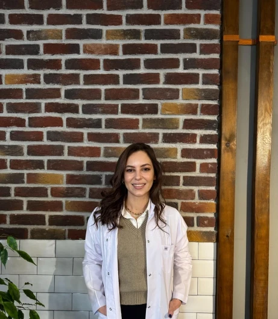

Dr. Dt. F. Merve BAŞ
Diş hekimi

Mesleki bilgiler
2015 yılında İstanbul Üniversitesi Diş Hekimliği Fakültesinden mezun oldu. Kartal Belediyesi Çocuk ve Engelli Ağız ve Diş Sağlığı Merkezinde diş hekimi ve mesul müdür olarak çalıştı.
Hasta kabul adresi
Caddebostan Mahallesi, Yener Sokak No: 9/7, 34728 Kadıköy / İstanbul